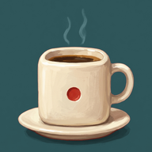

Terms and refunds
Yamb Café · 20 November 2026
Yamb Café is a dice game made by Ivan Kostešić, Croatia (“we” on this page). For anything here, write to hello@yambcafe.com.
- The game is free, and you can play without an account.
- Yamb Café Plus is one payment, not a subscription. It stays with your account on every device.
- Changed your mind? Write within 7 days and you get all your money back.
The game
Yamb Café is free to play in the browser on any device. We keep improving it, so parts of it may change. We do our best to keep it running, but cannot promise it is never interrupted.
Accounts
Signing in is optional and is for people aged 16 and over, one person per account. Choose a name others may see on the high scores: a name that insults someone or pretends to be someone else may be changed or removed. The same goes for the names of friends' tables. Inviting friends never earns Plus; it can earn the Šef sale badge, which has no other effect in the game. You can delete your account at any time in the game. How we handle your data is on the privacy page.
Fair play
Daily Yamb scores are checked by playing your moves again with that day's dice. Scores or accounts that get around this may be removed from the high scores.
Yamb Café Plus
Plus is a one-time purchase from €4.99. You may choose to pay more; anything above €4.99 also brings a small thank-you pin on your profile and unlocks nothing else. It unlocks the Plus parts of the game, as described in the game, for your account on all your devices, for as long as Yamb Café runs. There are no renewals and nothing to cancel. Plus may grow with new things; it will never become a subscription. Plus only adds to games without other real people, so it never gives anyone an advantage over another player.
Who sells it
Plus is sold by our reseller Polar (Polar Software, Inc., USA), which is the merchant of record. Polar takes the payment, issues the receipt and handles VAT, and its buyer terms apply to the payment itself. In Europe prices include VAT; elsewhere local tax may be added at checkout.
Refunds
If you change your mind, write to us within 7 days of buying and we refund you in full. Plus is digital content that you get at once: by buying it you ask for it to start immediately and accept that the legal 14-day right to withdraw ends at that moment. The 7 days are our own promise on top. If Plus does not work for you later and we cannot fix it, we refund you too. A refund removes Plus and the thank-you pin from the account.
If the game closes
If we ever decide to close Yamb Café, we will say so in the game at least 30 days before.
Liability
Yamb Café is offered as it is, for fun. As far as the law allows, we are not liable for losses from using it or from it being unavailable. Your rights as a consumer under the law of your country stay as they are.
Law and disputes
These terms follow Croatian law. If something goes wrong, please write to us first; we answer within a few days. You can also turn to the consumer protection bodies and courts of your own country.
Changes
If these terms change, we update this page and its date. A change never takes away Plus you already bought.
Back to the game